🔒 Challenges
(1) Learn features jointly informative across clients with no labels.
(2) Disentangle client-specific factors while preserving shared object structure.
(1) Learn features jointly informative across clients with no labels.
(2) Disentangle client-specific factors while preserving shared object structure.
(1) A shared adapter + slot attention trained collaboratively.
(2) A teacher–student architecture with EMA and (Local+Global) FedAvg to align object-level slots across clients.
🌟 Federated object-centric learning: learns object-level slots that transfer across heterogeneous clients without labels.
🌟 Shared adapter + slot attention: collaboratively adapts foundation-model features and reconstructs compact representations.
🌟 Two-branch teacher–student: student reconstructs full features; teacher supervises low-dimensional adapted features via EMA.
🌟 Cross-domain alignment: slot attention bridges clients to discover distributed concepts.
🌟 Strong results: outperforms centralized baselines on object discovery and generalizes across domains with a compact universal representation.

| Input | SAM (SA adapted) | DINO (SA adapted) | FORLA |
|---|---|---|---|
| 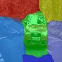 | 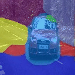 | 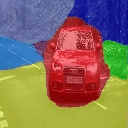 | |
| 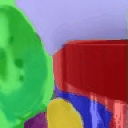 | 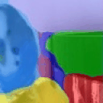 | 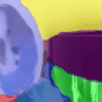 | |
| 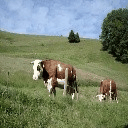 | 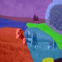 | 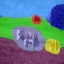 | 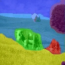 |
| 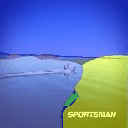 | 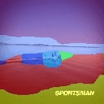 | 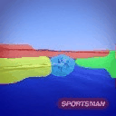 |
@article{liao2025forla,
title = {FORLA: Federated Object-centric Representation Learning with Slot Attention},
author = {Liao, Guiqiu and Jogan, Matjaž and Eaton, Eric and Hashimoto, Daniel A.},
journal = {arXiv preprint arXiv:2506.02964},
year = {2025}
}